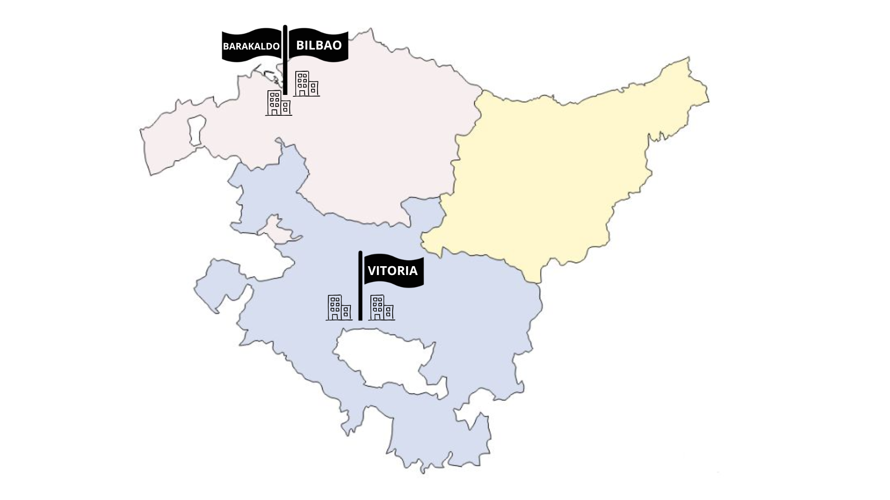

La empresa cuenta con una red distribuida en Euskadi, con oficinas en Álava y Bizkaia. En Álava la actividad se concentra en Vitoria‑Gasteiz, donde existen dos oficinas y, aunque podría abrirse alguna más, no se espera una expansión significativa fuera de la ciudad.
En Bizkaia la empresa dispone de una oficina en Bilbao, con posibilidades de crecimiento futuro, y otra en Barakaldo, donde no se prevén ampliaciones. Tampoco se descarta una futura llegada a Gipuzkoa, por lo que la red debe estar preparada para integrar nuevas sedes si fuera necesario.

La red actual está organizada por provincias, cada una con un router central ubicado en su ciudad principal: en Álava el router se encuentra en Vitoria‑Gasteiz y en Bizkaia en Bilbao. Desde estos routers provinciales se gestionan las conexiones hacia las distintas oficinas. En el caso de Barakaldo, al no prever crecimiento y estar muy próxima a Bilbao, no se ha añadido un router intermedio; su red LAN se conecta directamente al router provincial de Bizkaia.
Cada oficina dispone de su propia red local formada por un router de edificio, un switch y los equipos de usuario (PCs y portátiles). Además, los servidores se han colocado junto a los routers provinciales para centralizar servicios, facilitar la administración y asegurar que todas las delegaciones puedan acceder a ellos de forma eficiente. Esta estructura mantiene una jerarquía clara y permite escalar la red si en el futuro se añaden nuevas oficinas.